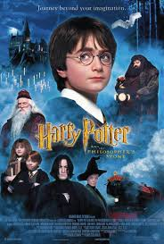

Harry Potter and the Sorcerer's Stone Movie Review
About the Movie
Director: Chris Columbus
Main Actor: Daniel Radcliffe
Synopsis:
Harry Potter and the Sorcerer's Stone, the first movie of the Harry Potter series, tells the story of eleven year old Harry Potter. His parents died when he was just a baby, and since then, he has been raised (poorly) by his aunt and uncle. One day, Harry receives mail... for him! In an attempt to keep young Harry from reading the mail, his aunt and uncle take Harry and their son on a "family trip" to a hut in the middle of the ocean. There, Harry is confronted by a man named Hagrid... who tells him he is a wizard! The book follows Harry as he goes to a school for wizards and witches called Hogwarts. There, he discovers things about himself, makes friends, and faces mysterious dangers.
Review:
I really liked Harry Potter and the Chamber of Secrets. I thought that the special effects were so realistic! The plot was very intriguing and not to even mention the skill of the actors! Emma Watson is a fantastic actress, and her character, Hermione, is so funny and smart! The other actors and actresses were also well chosen. Overall, I rate the movie 5/5!